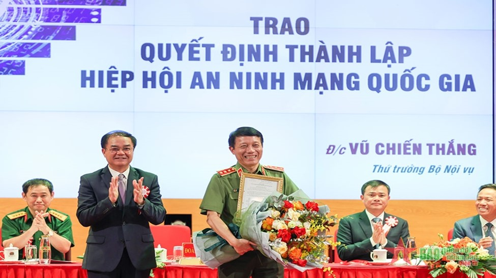

Hiệp hội có kế hoạch xây dựng mục tiêu rõ ràng, chính sách cụ thể và cơ chế hợp tác với các tổ chức quốc tế, các Hiệp hội An ninh mạng trong khu vực và trên thế giới. Đồng thời, tham gia các sự kiện về An ninh mạng trên phạm vi toàn cầu nhằm: xúc tiến thương mại và chuyển giao công nghệ; hỗ trợ các hoạt động xuất khẩu sản phẩm, dịch vụ và nhân lực; xử lý thảm họa, ứng phó sự cố.
Hiệp hội chủ động xây dựng các chương trình dự án hợp tác với các đối tác quốc tế dựa trên cơ sở nhu cầu của hội viên, năng lực của tổ chức và phù hợp với mục tiêu phát triển kinh tế của Đảng và Nhà nước.
Hiệp hội An ninh mạng quốc gia được thành lập tháng 9/2023, là tổ chức xã hội - nghề nghiệp của công dân và tổ chức Việt Nam hoạt động trong lĩnh vực an ninh mạng. Sứ mệnh và tầm nhìn của Hiệp hội không chỉ tạo ra lợi nhuận kinh tế mà phải hướng tới mục tiêu trở thành động lực cho sự nghiệp xây dựng và bảo vệ Tổ quốc.
Đại hội đại biểu toàn quốc lần thứ nhất của Hiệp hội An ninh mạng quốc gia diễn ra ngày 8/9 đã bầu ra Ban chấp hành Hiệp hội và thông qua chương trình, phương hướng hoạt động nhiệm kỳ 2023-2028.
